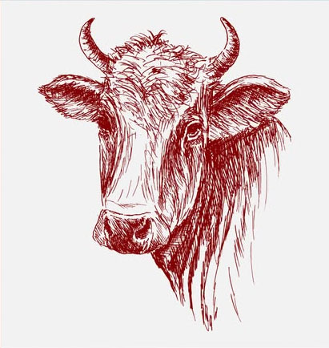
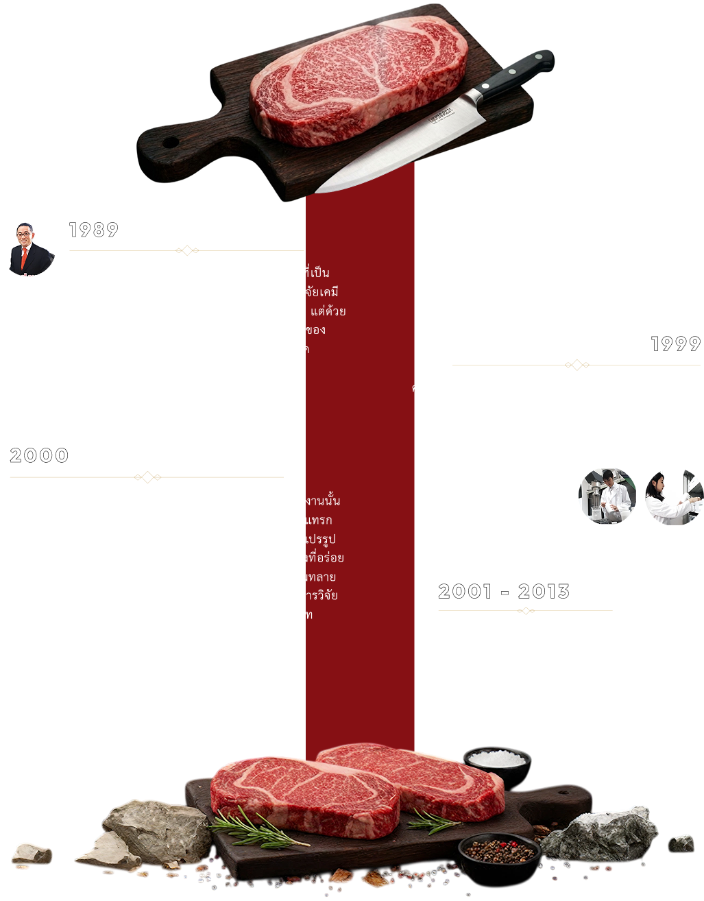
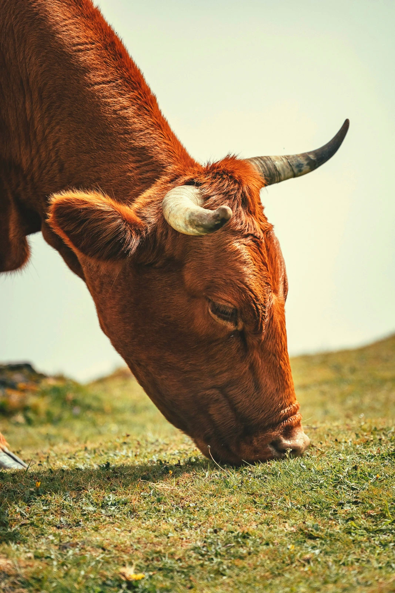
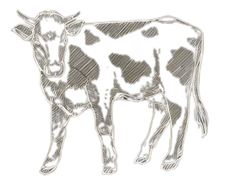
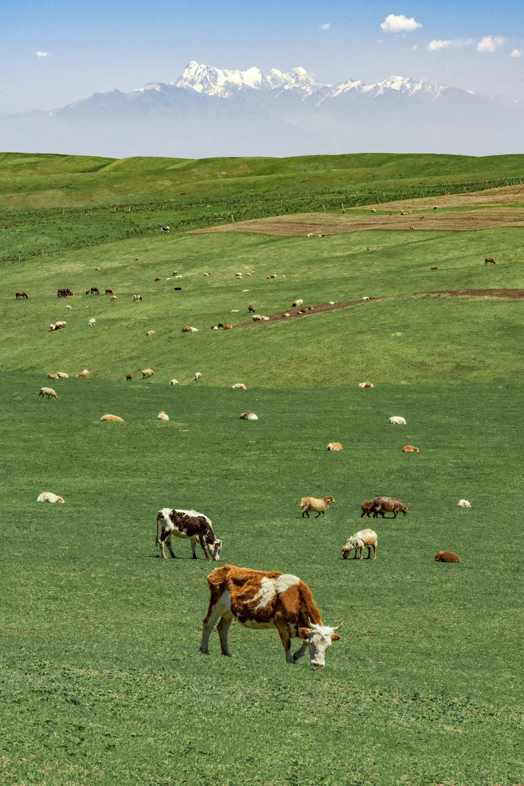
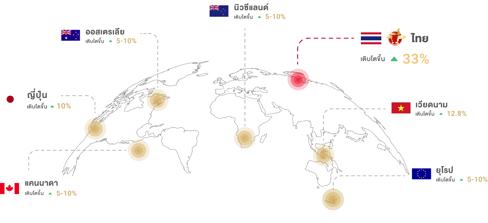

BIO FRESH
SNOWBEEF
สัมผัสความนุ่มละมุน
ดุจหิมะกับ Snow Beef
จากเนื้อวัวสายพันธุ์แท้ British Hereford ที่เลี้ยงด้วยหญ้าธรรมชาติ (Grass-Fed) จากทุ่งหญ้าอันกว้างใหญ่ในออสเตรเลีย สู่การยกระดับด้วยนวัตกรรม Artificial Marbling Technology ที่ช่วยแทรกลายไขมันให้สวยงาม มอบสัมผัสที่นุ่ม ชุ่มฉ่ำ และรสชาติที่เข้มข้นในทุกคำไม่เพียงแค่ความอร่อย แต่ยังเปี่ยมด้วยคุณค่าจาก โอเมก้า-3 ในสัดส่วนที่สมดุล ดีต่อสุขภาพ นี่คือวัตถุดิบชั้นเลิศที่จะช่วยสร้างมูลค่าเพิ่มและเปลี่ยนทุกจานอาหารของคุณให้เป็นเมนูระดับพรีเมียม

OUR PRODUCT
ผลิตภัณฑ์ของเรา
เนื้อส่วน สันใน, ริบอาย, สันนอก, เซอร์ลอยด์ และชัคโรลยกระดับด้วยนวัตกรรมแทรกไขมัน เอกสิทธิ์เพื่อสัมผัสนุ่มละมุนดุจเนยและรสชาติที่เข้มข้นสม่ำเสมอในทุกชิ้น
Snow Beef Australia
Steak Tenderloin
Snow beef Australia Steak Tenderloin
Rib eye Striploin (Tip) Chuck Roll
The origin of groundbreaking ideas and innovations
จุดกำเนิดของแนวคิดและนวัตกรรมที่ล้ำหน้า

ทําไมต้อง Snow Beef?
เราเชื่อว่า "เนื้อที่ดี" ต้องเริ่มจากต้นกำเนิดที่ดี Snow Beef จึงเป็นเนื้อวัว Grass-Fed ที่เลี้ยงด้วยหญ้าธรรมชาติ 100% ท่ามกลางทุ่งหญ้าอันกว้างใหญ่ ผสานกับนวัตกรรม Artificial Marbling Technology ที่ช่วยสร้างลายไขมันแทรกในเนื้ออย่างพอเหมาะ ผลลัพธ์ที่ได้คือเนื้อที่ นุ่ม ชุ่มฉ่ำ และรสชาติเข้มข้น ดุจหิมะที่ละลายในปาก

3 เหตุผลที่ SNOW BEEF
คือทางเลือกที่ใช่สำหรับคุณ
1. ดีต่อโลก (Better for the Planet)
เราใส่ใจสิ่งแวดล้อมตั้งแต่วันแรกการเลี้ยงแบบปล่อยทุ่งช่วยลดการใช้พลังงานในอุตสาหกรรมอาหารสัตว์ และช่วยลดการปล่อยก๊าซเรือนกระจก (Carbon Footprint) นอกจากนี้การหมุนเวียนของฝูงวัวยังช่วยฟื้นฟูหน้าดินให้กลับมาสมบูรณ์ตามระบบนิเวศอย่างยั่งยืน

2. ดีต่อสัตว์ (Happy Cows, Better Meat)
หัวใจของความอร่อยคือ "ความสุขของวัว" วัวของเราได้ใช้ชีวิตอย่างอิสระตามสัญชาตญาณ ไม่มีการกักขังในคอกที่แออัด เมื่อวัวไม่เครียดและมีสุขภาพดีตามธรรมชาติ เนื้อที่ได้จึงมีความนุ่มนวลและมีรสชาติที่ "สะอาด" อย่างแท้จริง
3. ดีต่อสุขภาพ (Naturally Nutritious)
เพราะวัวกินหญ้าเป็นอาหารหลัก Snow Beef จึงอุดมไปด้วย Omega-3 และสารต้านอนุมูลอิสระที่สูงกว่าเนื้อทั่วไป มีสัดส่วนไขมันที่ดีที่สมดุล ช่วยให้คุณอิ่มอร่อยได้แบบไม่ต้องกวรลเรื่องสุขภาพ
Snow Beef

Biological Matching : ความลับของความสอดคล้องทางชีวภาพ
เหตุผลที่ Snow Beef แตกต่างจากเนื้อฉีดไขมันทั่วไป คือการเลือกใช้หลักการ Biological Matching เราไม่ได้ใช้ไขมันจากแหล่งไหนก็ได้ แต่เราเจาะจงใช้ ไขมันวัวสายพันธุ์ British (British Fat) มาผสานเข้ากับ เนื้อวัวสายพันธุ์ British (British Meat) เมื่อ "สายพันธุ์" ตรงกัน ผลลัพธ์ที่ได้จึงมหัศจรรย์กว่า
โครงสร้างไขมันที่สมบูรณ์

โครงสร้างกรดไขมัน (Fatty Acid) ของเนื้อและไขมันมีความใกล้เคียงกันอย่างที่สุด
เนื้อสัมผัสที่เป็นธรรมชาติ
จุดหลอมเหลวที่พอดี
GROWTH RATE OF FAT-INJECTED BEEF.
อัตราการเติบโตของเนื้อวัวฉีดไขมัน

World-Class Facility
ดำเนินงานด้วยมาตรฐานสากลGHPและHACCPโดยควบคุมระบบการผลิตระดับเดียวกับประเทศญี่ปุ่น พร้อมมอบบริการแบบ One-Stop Serviceที่สะอาดและปลอดภัยในทุกขั้นตอนการแปรรูป